Ogni contributo verifica fonti primarie e indica cosa cambia per il destinatario. Mai marketing, mai pareri travestiti.
Chiudere l'esercizio con un avanzo non trasforma automaticamente un'organizzazione di volontariato in impresa commerciale. Ciò che conta, nel Codice del Terzo settore, non è produr…
La divisione ereditaria che comprende un immobile privo di titolo edilizio può essere colpita da nullità, rilevabile anche d'ufficio dal giudice. Il tema tocca da vicino i coeredi …
Un orientamento della Cassazione penale, Sez. II, affronta un nodo delicato: il datore che, con minacce anche velate di licenziamento, costringe il lavoratore ad accettare condizio…
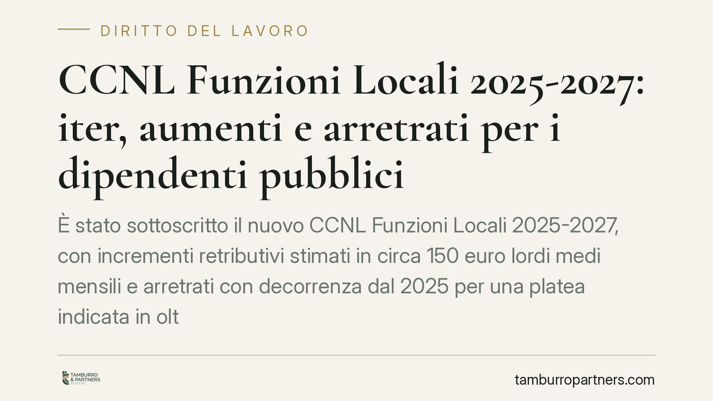
È stato sottoscritto il nuovo CCNL Funzioni Locali 2025-2027, con incrementi retributivi stimati in circa 150 euro lordi medi mensili e arretrati con decorrenza dal 2025 per una pl…
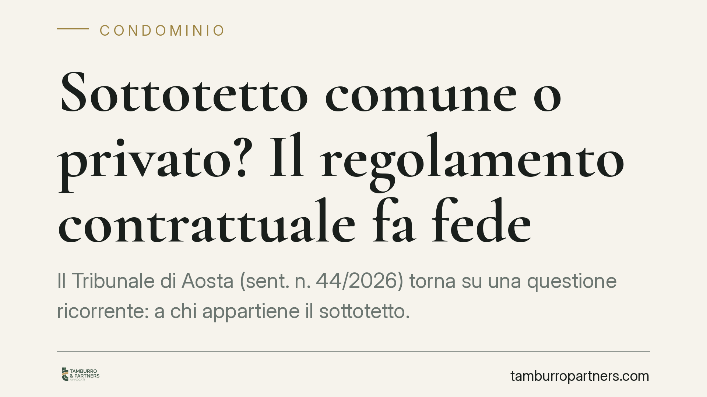
Il Tribunale di Aosta (sent. n. 44/2026) torna su una questione ricorrente: a chi appartiene il sottotetto. Quando il regolamento condominiale di natura contrattuale lo qualifica c…
Chi rifiuta senza motivo l'esame del DNA in un giudizio di paternità rischia molto: il diniego diventa un indizio di peso che il giudice valuta insieme agli altri elementi. Una rec…
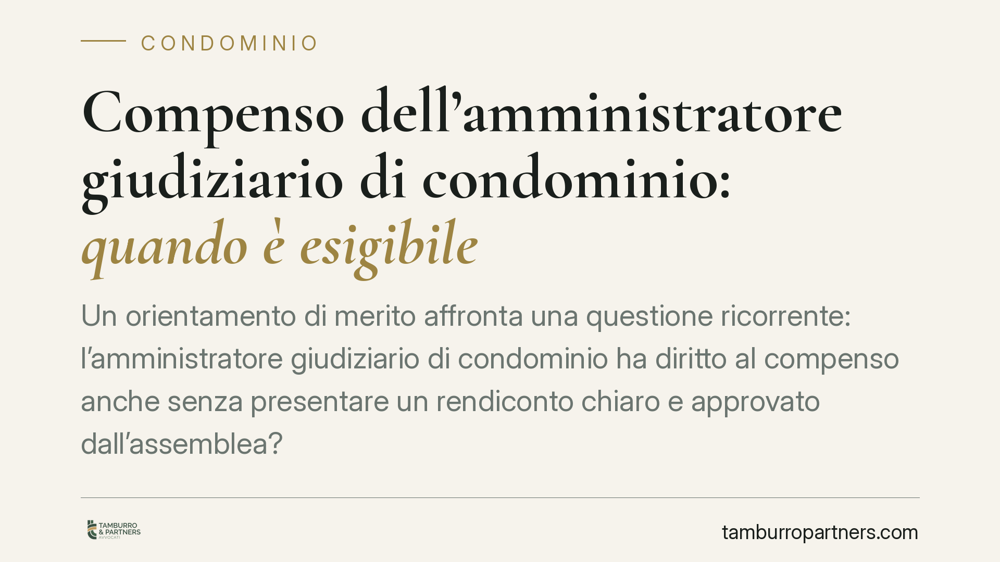
Un orientamento di merito affronta una questione ricorrente: l'amministratore giudiziario di condominio ha diritto al compenso anche senza presentare un rendiconto chiaro e approva…
Una recente pronuncia di merito è tornata sul tema della trasparenza delle delibere assembleari: l'assemblea che incarica un consulente esterno senza indicarne nominativo, compenso…
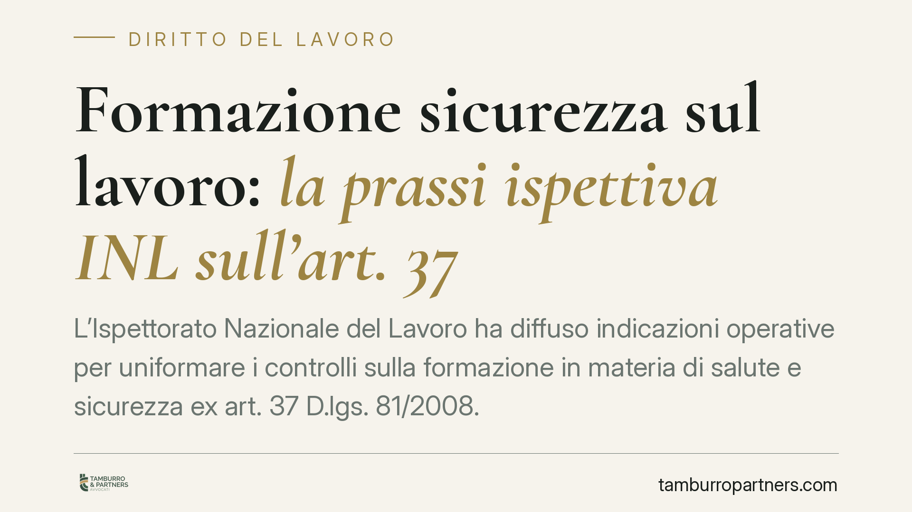
L'Ispettorato Nazionale del Lavoro ha diffuso indicazioni operative per uniformare i controlli sulla formazione in materia di salute e sicurezza ex art. 37 D.lgs. 81/2008. Il tema …
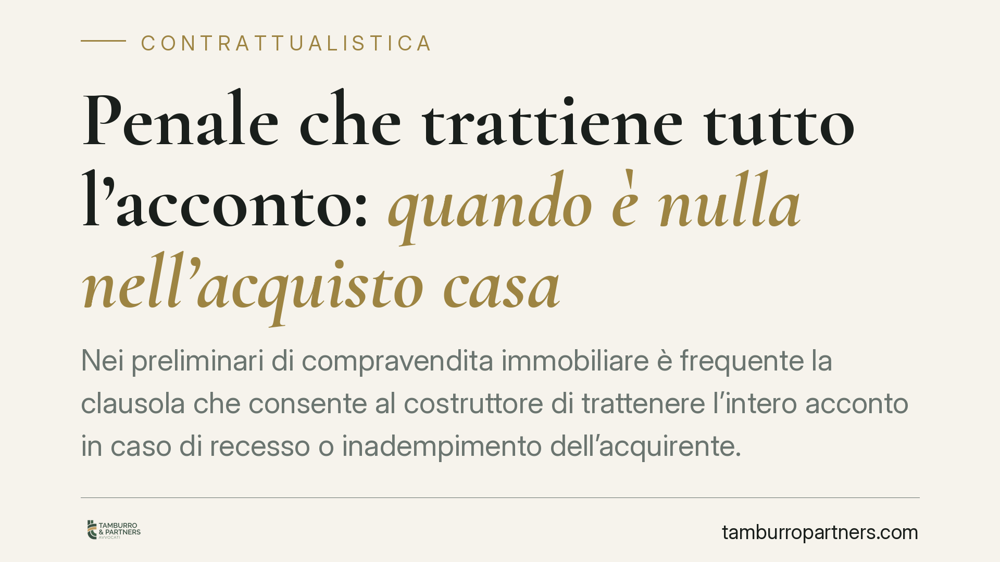
Nei preliminari di compravendita immobiliare è frequente la clausola che consente al costruttore di trattenere l'intero acconto in caso di recesso o inadempimento dell'acquirente. …
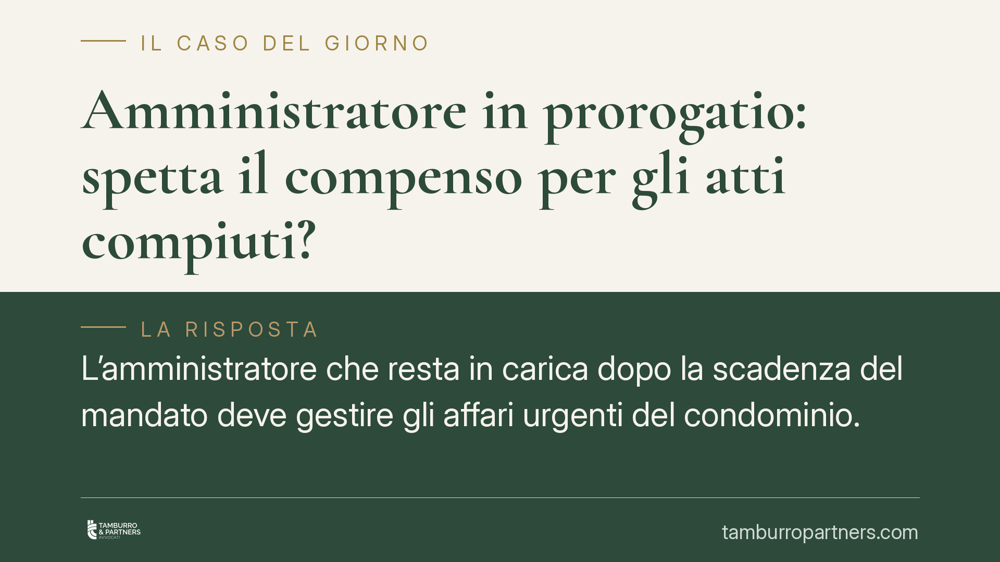
L'amministratore che resta in carica dopo la scadenza del mandato deve gestire gli affari urgenti del condominio. Ma per quelle attività può pretendere un compenso? Il Tribunale di…
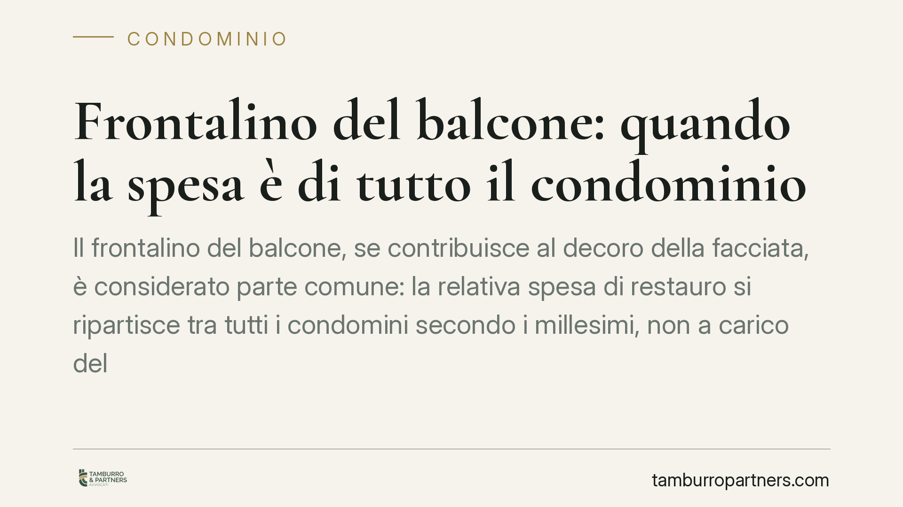
Il frontalino del balcone, se contribuisce al decoro della facciata, è considerato parte comune: la relativa spesa di restauro si ripartisce tra tutti i condomini secondo i millesi…
Un testamento olografo che non si trova dopo la morte del testatore non è solo un documento smarrito: la legge lo presume distrutto e quindi revocato. Una recente pronuncia di meri…
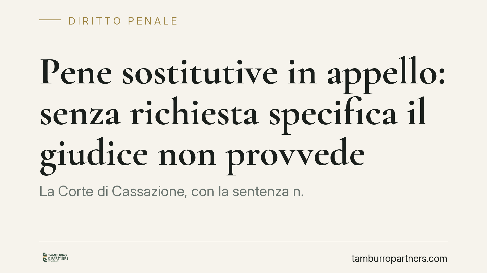
La Corte di Cassazione, con la sentenza n. 19648/2026, chiarisce un punto decisivo per la difesa: in appello le pene sostitutive della detenzione breve non possono essere disposte …
Una recente pronuncia della Cassazione torna sul mantenimento del figlio maggiorenne economicamente non autosufficiente. Superata una certa età, il genitore non è tenuto a un soste…
La direttiva (UE) 2024/2831 introduce una presunzione legale di rapporto di lavoro subordinato per chi opera tramite piattaforme digitali. Gli Stati membri dovranno recepirla entro…
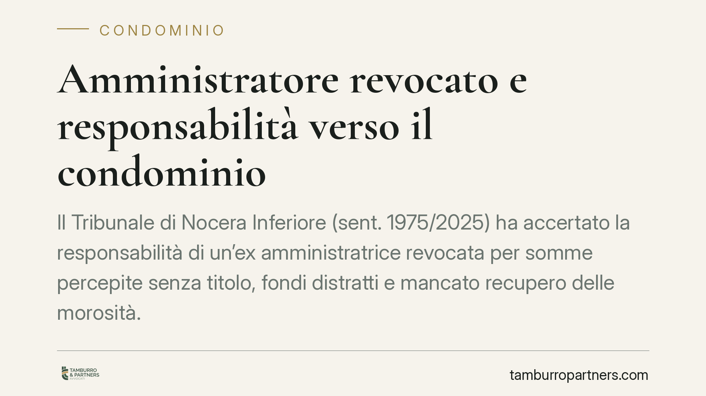
Il Tribunale di Nocera Inferiore (sent. 1975/2025) ha accertato la responsabilità di un'ex amministratrice revocata per somme percepite senza titolo, fondi distratti e mancato recu…
Il conducente straniero che non comprende la lingua italiana ha diritto all'assistenza di un interprete nelle fasi dell'accertamento penale. Nell'ambito dei controlli con etilometr…
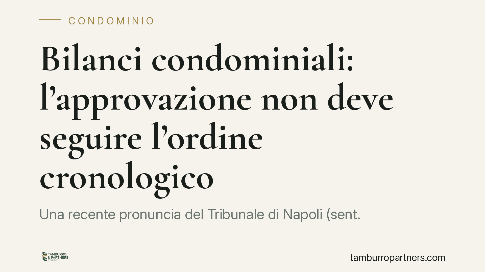
Una recente pronuncia del Tribunale di Napoli (sent. 5036/2025) affronta un dubbio ricorrente: l'assemblea è obbligata ad approvare i bilanci condominiali in sequenza cronologica? …
Una pronuncia del Tribunale di Napoli torna su un punto delicato della vita condominiale: cosa accade se l'avviso di convocazione non indica la data della seconda adunanza. La deli…
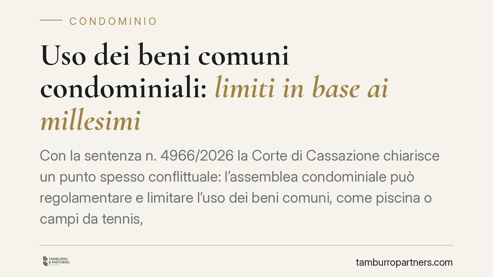
Con la sentenza n. 4966/2026 la Corte di Cassazione chiarisce un punto spesso conflittuale: l'assemblea condominiale può regolamentare e limitare l'uso dei beni comuni, come piscin…
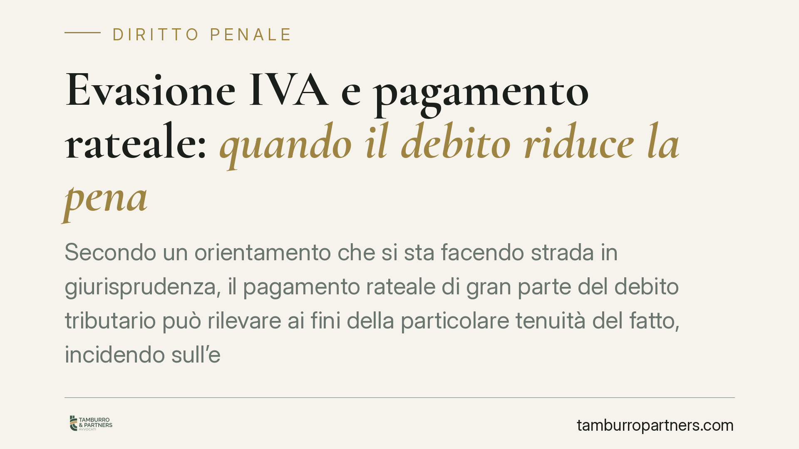
Secondo un orientamento che si sta facendo strada in giurisprudenza, il pagamento rateale di gran parte del debito tributario può rilevare ai fini della particolare tenuità del fat…
Il Tribunale di Napoli ha ordinato l'esecuzione immediata dei lavori sul lastrico solare per fermare le infiltrazioni, accogliendo un ricorso d'urgenza. La decisione conta perché a…
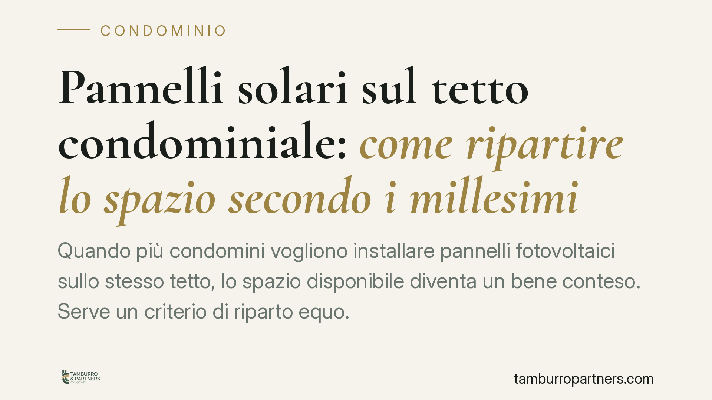
Quando più condomini vogliono installare pannelli fotovoltaici sullo stesso tetto, lo spazio disponibile diventa un bene conteso. Serve un criterio di riparto equo. La soluzione co…
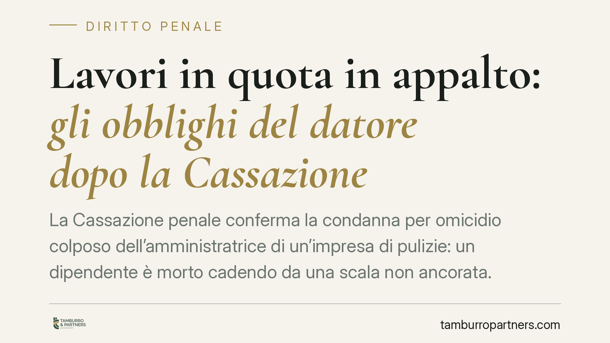
La Cassazione penale conferma la condanna per omicidio colposo dell'amministratrice di un'impresa di pulizie: un dipendente è morto cadendo da una scala non ancorata. Il principio …
Il Tribunale di Napoli, con la sentenza n. 10232/2026, affronta un nodo ricorrente: chi risponde verso il condominio quando l'inquilino destina l'immobile a un uso vietato dal rego…
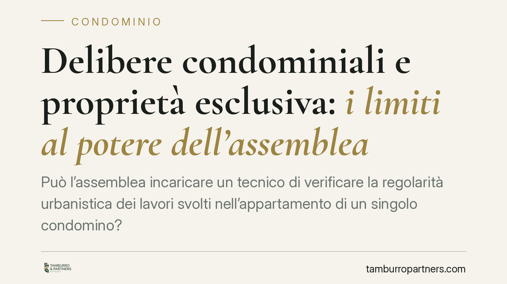
Può l'assemblea incaricare un tecnico di verificare la regolarità urbanistica dei lavori svolti nell'appartamento di un singolo condomino? La questione tocca il confine tra compete…
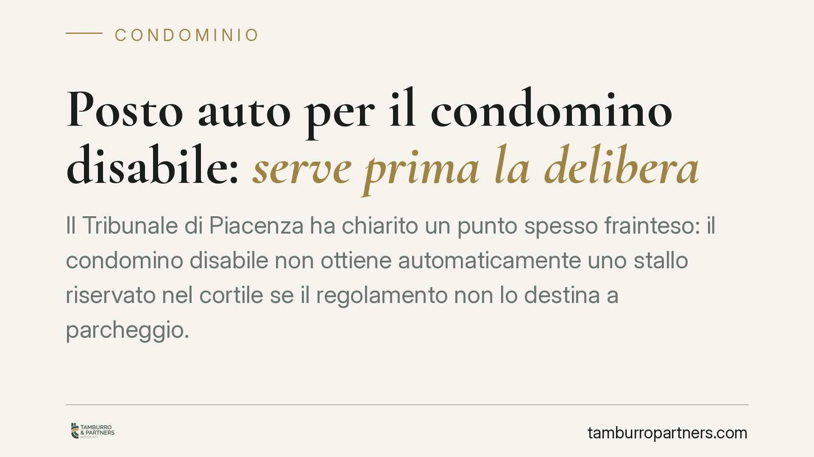
Il Tribunale di Piacenza ha chiarito un punto spesso frainteso: il condomino disabile non ottiene automaticamente uno stallo riservato nel cortile se il regolamento non lo destina …
Un messaggio di testo su WhatsApp può bastare a licenziare un dipendente, purché rispetti la forma scritta richiesta dalla legge. Una nota vocale, invece, è nulla perché non integr…
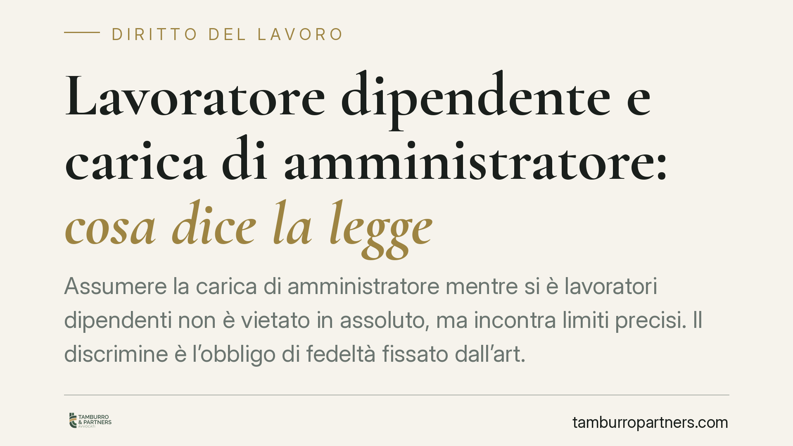
Assumere la carica di amministratore mentre si è lavoratori dipendenti non è vietato in assoluto, ma incontra limiti precisi. Il discrimine è l'obbligo di fedeltà fissato dall'art.…